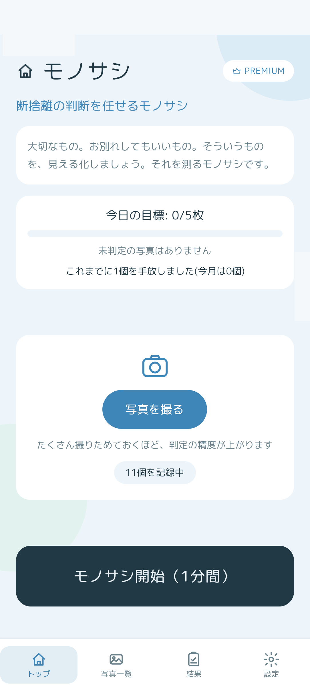
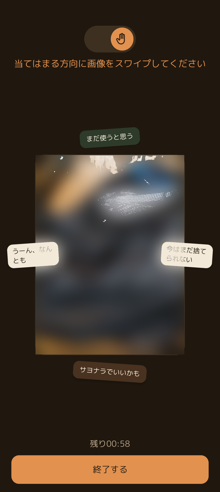
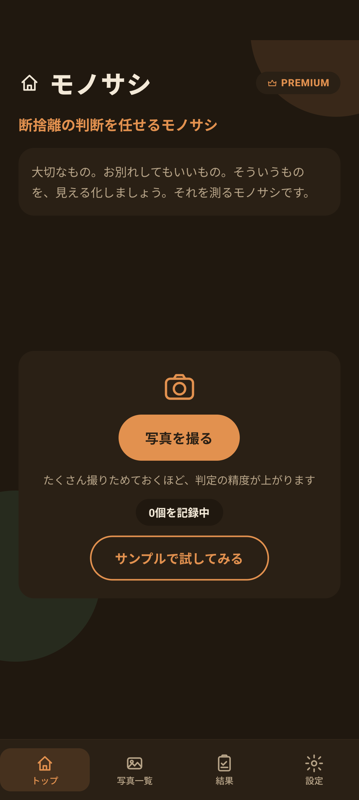
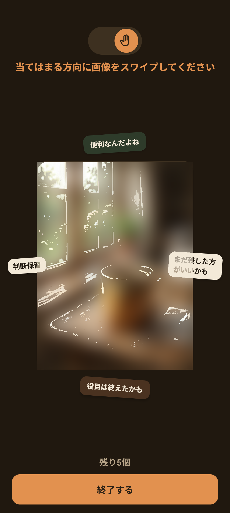
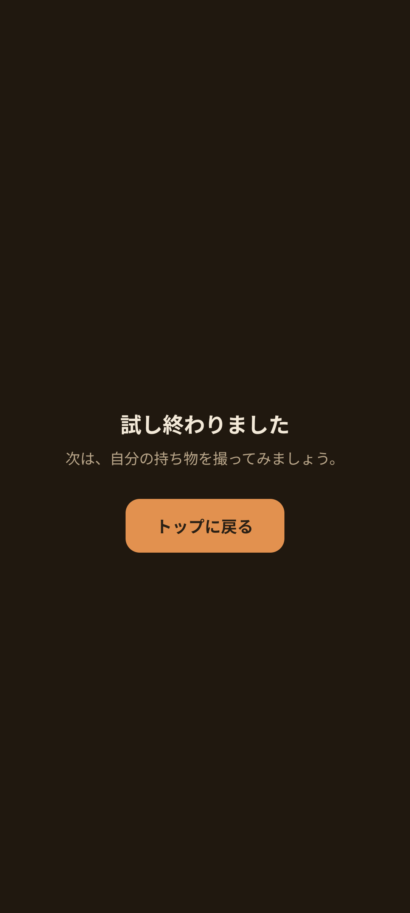

📷 持ち物を撮影して登録する
クローゼット、机の引き出し、本棚などで「捨てるか残すか迷っているもの」を見つけたら、まずはスマートフォンのカメラで撮影してアプリに登録します。
1
トップ画面で「写真を撮る」をタップ
カメラが起動します。持ち物がはっきりと写るようにピントを合わせてシャッターを押します。
2
何枚でもどんどん撮りためる
たくさん撮りためておくほど、モノサシ判定の精度がぐんぐん上がります。トップ画面には「〇個を記録中」と表示されます。

写真が登録されると「モノサシ開始 (1分間)」ボタンがアクティブに（ダークモード）

端末の設定に連動して爽やかなライトモードにも自動で切り替わります
👆 1分間のモノサシ判定（スワイプ）
トップ画面の「モノサシ開始 (1分間)」ボタンを押すと、登録した持ち物の写真が次々と中央に表示されます。1回のセッションはちょうど1分間。制限時間内に、直感のまま上下左右にスワイプしていきましょう。
| スワイプ方向 | 表示される気持ち | 意味・おすすめの判断 |
|---|---|---|
| ⬆️ 上方向 | まだ使うと思う / 便利なんだよね | 普段よく使っている、生活に役立っている、残したい |
| ⬇️ 下方向 | サヨナラでいいかも / 役目は終えたかも | もう十分使い切った、なくても困らない、手放す候補 |
| ➡️ 右方向 | 今はまだ捨てられない / まだ残した方がいいかも | 思い出がある、今は手放せないけれど少し引っかかる |
| ⬅️ 左方向 | うーん、なんとも / 判断保留 | 今は決められない、判断がつかない、後でまた考えたい |

中央の写真と周囲の選択肢。「残り00:58」タイマーを見ながらテンポよくスワイプ
💡 直感でスワイプするのが最大のコツ！
じっくり考え込んでしまうと、頭で「いつか使うかも…」と理由を探してしまいがちです。モノサシは1回のミスを恐れる必要がありません。その瞬間に感じたまま、テンポよくスワイプしましょう。
じっくり考え込んでしまうと、頭で「いつか使うかも…」と理由を探してしまいがちです。モノサシは1回のミスを恐れる必要がありません。その瞬間に感じたまま、テンポよくスワイプしましょう。
🧪 まずはサンプルで試してみる
まだ自分の持ち物の写真を撮っていない方や、どんなアプリか試してみたい方向けに、「サンプルで試してみる」機能を用意しています。

写真が0個のときは「サンプルで試してみる」ボタンが表示されます

お試し写真を使ってスワイプの操作感を気軽に体験

「試し終わりました」画面からトップへ戻り、自分の持ち物を撮影しましょう
❓ スワイプ判定に関するFAQ
1分経つ前に途中でやめることはできますか？
はい、画面下部の「終了する」ボタンをタップすれば、いつでもその場でセッションを終了できます。それまでにスワイプした結果はすべて自動で記録されています。
同じ写真が何回も出てくるのはなぜですか？
人間の気持ちは日や気分によって揺れ動くものです。「モノサシ」は日を置いて複数回スワイプしてもらうことで、その写真に対する安定した本音（確信度）を判定しています。